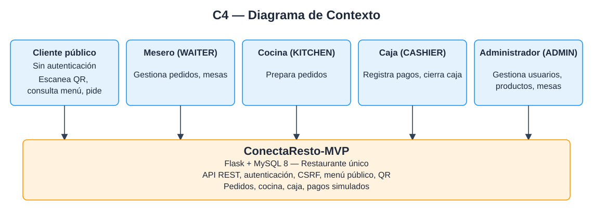
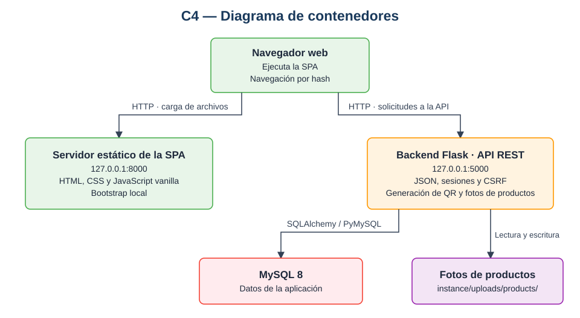
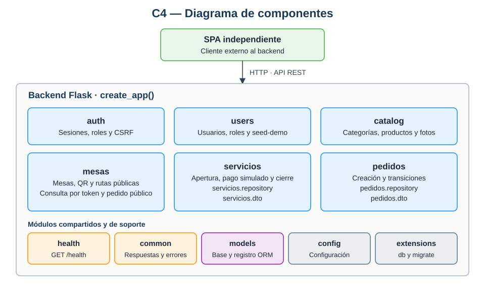
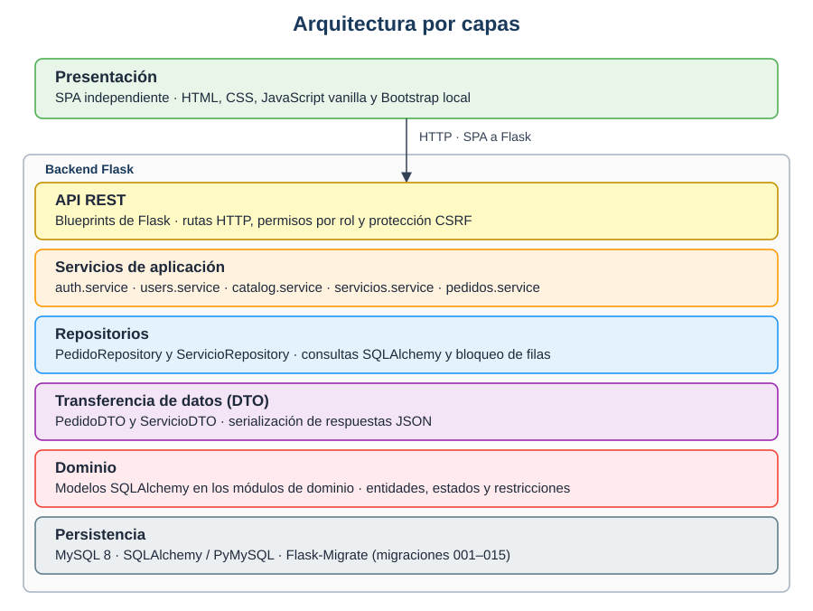
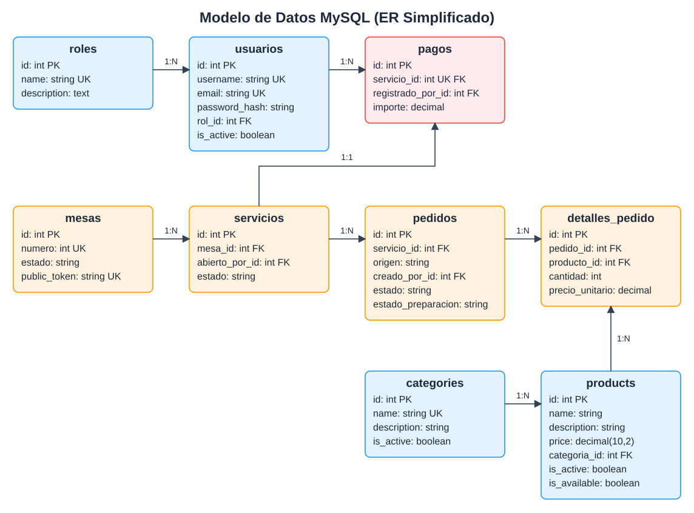
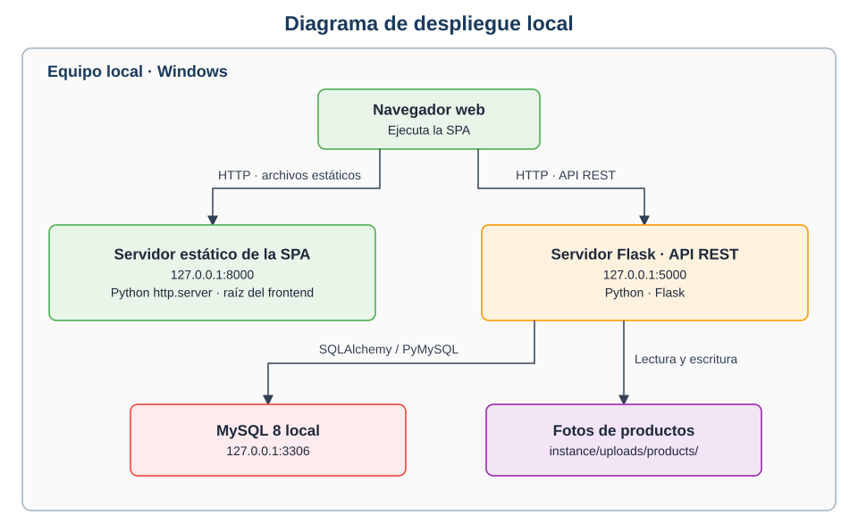
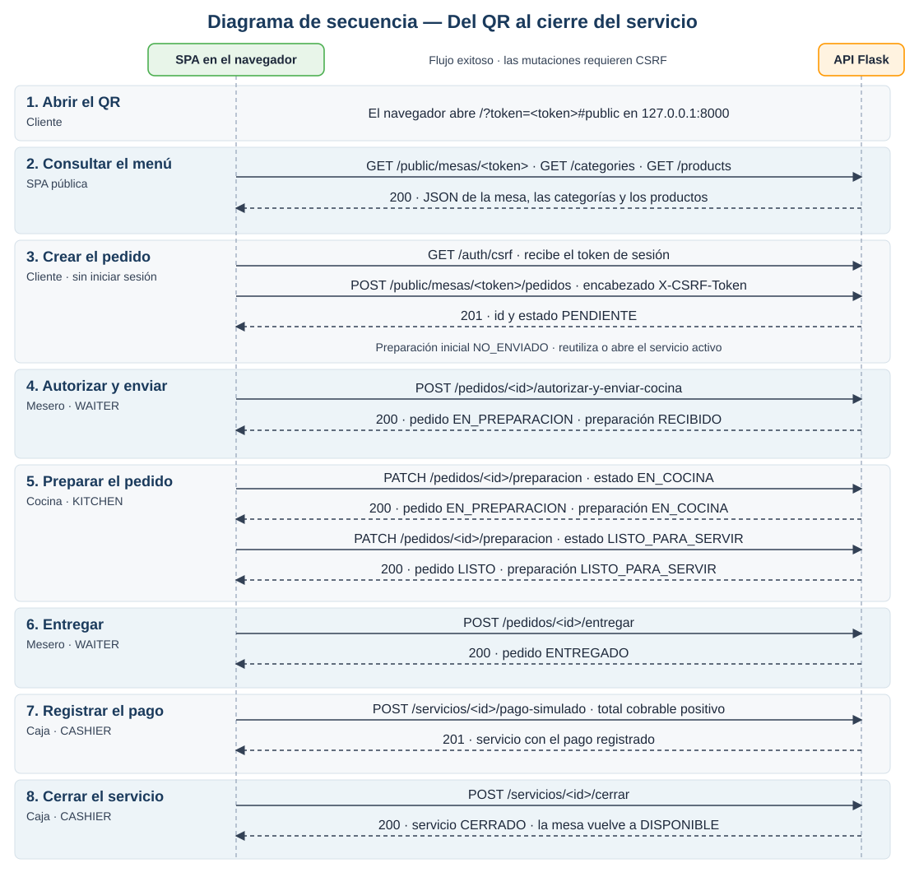

Equipo de desarrollo:
Antecedente: PLAN_DE_TRABAJO_MVP.md, conservado en el historial Git del backend (revisión 7de6694). El alcance vigente se contrasta con los README de ambos repositorios.
ConectaResto-MVP es una aplicación académica de gestión de restaurantes para un único establecimiento, con una API REST en Python, Flask y MySQL 8 y una SPA independiente en HTML, CSS, JavaScript vanilla y Bootstrap local. Permite gestionar mesas y productos, recibir pedidos mediante QR, autorizarlos, prepararlos y registrar pagos simulados.
El proyecto nace como una aplicación académica independiente. El plan de trabajo histórico definió el alcance para un establecimiento. El restaurante opera con una única sucursal y necesita gestionar mesas, productos, pedidos, cocina y caja mediante una aplicación web.
El objetivo es desarrollar un MVP de gestión de restaurantes para un único establecimiento, permitiendo a los clientes consultar el menú y realizar pedidos mediante QR, y al personal interno gestionar mesas, pedidos, cocina y caja.
| Rol | Responsabilidades principales |
|---|---|
| ADMIN | Gestionar usuarios, productos, categorías, mesas y sus códigos QR. |
| WAITER (mesero) | Abrir servicios, crear pedidos, autorizar y enviar a Cocina, entregar y cancelar pedidos pendientes que aún no se hayan enviado. |
| KITCHEN (cocina) | Ver pedidos en preparación, cambiar estados de preparación. |
| CASHIER (caja) | Ver pedidos listos para cobrar, registrar pagos simulados, cerrar servicios. |
| Cliente público | Consultar menú y crear pedidos mediante QR sin autenticación. |
login_required y roles_required.127.0.0.1.Antecedente: PLAN_DE_TRABAJO_MVP.md (revisión 7de6694 del backend), secciones de alcance, roles, reglas de negocio y decisiones pendientes.
with_for_update(), transacciones atómicas, precios serializados como cadena para preservar precisión Decimal.El plan histórico dejó abiertas decisiones sobre medios de pago, comprobantes, cancelación y reembolsos, expiración de sesión, URL para el QR y retención de datos. El MVP resolvió la cancelación de pedidos pendientes sin enviar, la sesión de ocho horas y la URL del QR para la demo local.
Evidencia verificada: código fuente en app/, contratos en app/catalog/CONTRACT.md y app/pedidos/CONTRACT.md, migraciones 001–015 en migrations/versions/ y código de la SPA en su repositorio.
El proyecto lo desarrollan dos integrantes:
El seguimiento de tareas se realiza mediante Jira. El control de versiones se gestiona con Git y GitHub. La integración de cambios se realiza mediante ramas independientes y Pull Requests sobre la rama main.
La aplicación sigue el patrón factory create_app() con instancia db a nivel de módulo y migraciones mediante Flask-Migrate. Flask expone la API REST. El servidor estático del frontend entrega la SPA, que consume la API desde el navegador.
app/__init__.py)development, testing, production).SQLAlchemy y Flask-Migrate.health, auth, mesas, public_mesas, users, categories, products, servicios, pedidos.app/config.py)SESSION_COOKIE_HTTPONLY = TrueSESSION_COOKIE_SAMESITE = "Lax"SESSION_REFRESH_EACH_REQUEST = FalsePERMANENT_SESSION_LIFETIME = timedelta(hours=8)SECRET_KEY desde variable de entorno.SQLALCHEMY_DATABASE_URI desde DATABASE_URL.SQLALCHEMY_ENGINE_OPTIONS: pool_pre_ping = True, pool_recycle = 3600TestingConfig: usa SQLite en memoria por defectoProductionConfig: SESSION_COOKIE_SECURE = True y exige SECRET_KEY segura| Capa | Componentes | Responsabilidad |
|---|---|---|
| Presentación | SPA independiente en HTML, CSS y JavaScript vanilla con Bootstrap local | Interfaz de usuario y consumo de API REST |
| API REST | Endpoints Flask (auth, users, catalog, mesas, servicios, pedidos) | Contratos HTTP con métodos, roles y códigos de respuesta |
| Aplicación (Services) | auth.service, users.service, catalog.service, servicios.service, pedidos.service | Lógica de negocio por dominio |
| Acceso a datos (Repositorios) | PedidoRepository, ServicioRepository | Consultas SQLAlchemy, bloqueo de fila |
| Transferencia (DTO) | PedidoDTO, ServicioDTO | Serialización de respuestas JSON |
| Dominio (Modelos y reglas) | Modelos SQLAlchemy, reglas de negocio, validaciones de dominio | Entidades, estados, transiciones, restricciones |
| Datos | MySQL 8, Flask-Migrate (migraciones 001–015) | Almacenamiento persistente |
Los SVG se conservan como evidencia de diseño. Algunas etiquetas corresponden a la versión anterior. La descripción vigente de la arquitectura y el despliegue está en 3.2, 3.3 y 4.2, y el flujo actual está en 5.1.
| Diagrama | Contenido |
|---|---|
| C4 de Contexto | Actores (cliente público, mesero, cocina, caja, administrador) y sistema ConectaResto-MVP |
| C4 de Contenedores | Navegador, SPA, Flask, MySQL 8, sistema de archivos |
| C4 de Componentes | Blueprints, repositorios, DTO, modelos, extensiones, configuración |



| Diagrama | Contenido |
|---|---|
| Clases / Entidades del dominio | Roles, usuarios, categorías, productos, mesas, servicios, pedidos, detalles de pedido, pagos |
| Arquitectura por capas | Capas de presentación, API, aplicación, repositorios, DTO, dominio y datos |
| Modelo de datos MySQL (ER) | Nueve tablas de aplicación y sus relaciones. El SVG resume el esquema y omite algunos campos. |
| Despliegue local | Vista histórica del despliegue. La configuración vigente de los dos servidores está en 4.2. |



| ADR | Decisión | Estado |
|---|---|---|
| ADR-1 | Flask como framework backend. | Histórico — vigente según código actual |
| ADR-2 | MySQL como base relacional. | Histórico — vigente según código actual |
| ADR-3 | Arquitectura monolítica modular para la API. | Vigente en el backend. La SPA se ejecuta por separado. |
| ADR-4 | Decisión vigente: SPA independiente en HTML, CSS y JavaScript vanilla con Bootstrap local y navegación por hash. Flask expone la API REST. La SPA se sirve desde su propio repositorio. | Implementación histórica superada: interfaz integrada en Flask mediante vistas Jinja2 y una copia de la SPA servida desde /app/. |
| ADR-5 | Ejecución local sin despliegue en producción. | Histórico — vigente según alcance del MVP |
with_for_update(), transacciones atómicas.pool_pre_ping y pool_recycle, precios serializados como cadena para preservar precisión Decimal.GET /health, sesiones con expiración absoluta de 8 horas.Evidencia verificada: requirements.txt, código fuente en app/.
| Componente | Tecnología | Versión mínima |
|---|---|---|
| Backend | Flask (Python) | >=3.0.0 |
| Lenguaje backend | Python | — |
| Frontend | HTML, CSS, JavaScript vanilla y Bootstrap local | Bootstrap 5.3.2 incluido |
| Base de datos | MySQL 8 | — |
| ORM / migraciones | Flask-SQLAlchemy, Flask-Migrate | >=3.0.0 / >=4.0.0 |
| Pruebas | Pytest | >=8.0.0 |
| Driver MySQL | PyMySQL | >=1.1.0 |
| Variables de entorno | python-dotenv | >=1.0.0 |
| Generación QR | segno | >=1.4.0 |
Para la demostración local, la API Flask escucha en http://127.0.0.1:5000. Desde la raíz del repositorio frontend, python -m http.server 8000 --bind 127.0.0.1 sirve la SPA en http://127.0.0.1:8000. El cliente js/api.js usa API_ORIGIN con la dirección de Flask.
| Variable del backend | Uso |
|---|---|
DATABASE_URL | URL de conexión de SQLAlchemy a MySQL. Los valores se definen en la instalación local. |
SECRET_KEY | Firma las cookies de sesión Flask. Se configura con una clave privada. |
PUBLIC_BASE_URL | Base de la SPA para los enlaces públicos. En la demo apunta a http://127.0.0.1:8000. |
En desarrollo, Flask permite CORS con credenciales para el origen exacto http://127.0.0.1:8000. La SPA usa credentials: 'include' para las solicitudes a la API y añade el token CSRF en las operaciones de escritura. .env.example sirve como plantilla. El archivo local .env se mantiene fuera del repositorio.
La factory create_app() en app/__init__.py crea la instancia Flask, carga la configuración por entorno, inicializa SQLAlchemy y Flask-Migrate, registra manejadores globales de errores y registra los blueprints de la API y aplica la protección CSRF con before_request.
La suite se puede ejecutar con python -m pytest -q y TEST_DATABASE_URL=sqlite:///:memory: para aislarla de MySQL. Los resultados históricos se identifican en 5.9.
Evidencia vigente: README de ambos repositorios, rutas y servicios de Flask y vistas en js/views/ de la SPA. Antecedentes: docs/ESTADO_CIERRE_MVP.md, docs/QR_PUBLICO.md y docs/E3_MENU_PUBLICO.md, consultables en la revisión histórica 7de6694 del backend.
GET /admin/mesas/<id>/qr.svg. Flask genera el SVG con segno. El enlace abre /?token=<token>#public en la SPA. La generación usa el origen local permitido si coincide con el de la solicitud, o PUBLIC_BASE_URL en los demás casos. Los enlaces antiguos GET /public/mesas/<token>/menu redirigen con HTTP 302 a la SPA si el token es válido y devuelven 404 si es inválido.URLSearchParams, consulta la mesa con GET /public/mesas/<token> y carga el catálogo. Envía POST /public/mesas/<token>/pedidos con CSRF y sin inicio de sesión. El backend reutiliza un servicio ACTIVO o abre uno para una mesa DISPONIBLE. Una mesa CERRADA rechaza pedidos.POST /pedidos/<id>/autorizar-y-enviar-cocina. La operación registra la autorización cuando falta, conserva la existente y deja el pedido en EN_PREPARACION con preparación RECIBIDO en una sola transacción.PATCH /pedidos/<id>/preparacion para pasar de RECIBIDO a EN_COCINA y luego a LISTO_PARA_SERVIR. La última transición deja el pedido en LISTO.POST /pedidos/<id>/entregar. El pedido pasa a ENTREGADO.POST /servicios/<id>/pago-simulado si el total cobrable es positivo y POST /servicios/<id>/cerrar para cerrar el servicio y devolver la mesa a DISPONIBLE.Flask sirve las fotografías de productos mediante GET /products/<id>/image desde instance/uploads/products/. Para productos sin fotografía, la SPA sirve img/default-product.svg desde su propio origen.
Las operaciones de pedido y caja coordinan el acceso con actualizaciones de bloqueo y lecturas with_for_update() en MySQL. bloquear_servicio() adquiere primero el bloqueo de mesa y luego el de servicio. Caja, cancelación y autorización con envío consultan el pago antes de bloquear pedidos. Cada operación confirma la transacción al finalizar o la revierte si falla.
Evidencia verificada: modelos de app/catalog/, app/users/, app/mesas/, app/servicios/ y app/pedidos/, y migraciones 001–015 (HEAD: 015_add_cancelado_to_pedidos), app/catalog/CONTRACT.md §Modelo.
El esquema físico de MySQL se gestiona mediante 15 migraciones versionadas de Flask-Migrate. La revisión 015 incorpora CANCELADO a la restricción ck_pedidos_estado. Los modelos de las nueve tablas de aplicación heredan de BaseModel con columnas id (PK), created_at y updated_at.
| Tabla | Columnas principales | Relaciones / restricciones |
|---|---|---|
roles | id, name (unique), description | Roles: ADMIN, WAITER, KITCHEN, CASHIER. |
usuarios | id, username (unique), email (unique), password_hash, rol_id FK, is_active | FK a roles.id. Un usuario tiene un rol. |
categories | id, name (unique, collation utf8mb4_0900_ai_ci), description, is_active | Nombre único sin distinguir mayúsculas/acentos. |
products | id, name, description, price NUMERIC(10,2), categoria_id FK, is_active, is_available, image_filename | FK a categories.id. El servicio de catálogo valida la unicidad del nombre por categoría. Precio Decimal serializado como cadena. |
mesas | id, numero (unique, >0), estado (DISPONIBLE/OCUPADA/CERRADA), public_token (unique, 64 hex) | Token público estable entre servicios para menú QR. |
servicios | id, mesa_id FK, abierto_por_id FK nullable, estado (ACTIVO/CERRADO) | FK a mesas.id y usuarios.id. La migración 008 declara estado_activo como columna generada virtual y uq_servicios_una_activa_por_mesa como restricción única sobre (mesa_id, estado_activo). El modelo ORM Servicio no declara ninguno de esos dos elementos. En la capa de aplicación, _crear_servicio_para_mesa() cambia la mesa a OCUPADA mediante una actualización condicional que exige que esté DISPONIBLE. Después comprueba si existe un servicio ACTIVO para esa mesa y solo crea uno cuando no existe. |
pedidos | id, servicio_id FK, origen (MESERO/PUBLICO), creado_por_id FK nullable, autorizado_por_id FK nullable, autorizado_at nullable, estado, estado_preparacion | FK a servicios.id y usuarios.id. Check constraints en estados y origen. |
detalles_pedido | id, pedido_id FK, producto_id FK, cantidad, precio_unitario NUMERIC(10,2) | FK a pedidos.id y products.id. Precio capturado al crear el pedido. |
pagos | id, servicio_id (unique) FK, registrado_por_id FK, importe NUMERIC(10,2) (>0), fecha_registro | FK a servicios.id y usuarios.id. Un pago por servicio. |
| Acción | Estado del pedido | Estado de preparación | Rol |
|---|---|---|---|
| Crear | PENDIENTE | NO_ENVIADO | WAITER / Público |
| Autorizar | PENDIENTE | NO_ENVIADO | WAITER |
| Autorizar y enviar a Cocina, o enviar un pedido ya autorizado | EN_PREPARACION | RECIBIDO | WAITER |
| Cocina comienza | EN_PREPARACION | EN_COCINA | KITCHEN |
| Cocina termina | LISTO | LISTO_PARA_SERVIR | KITCHEN |
| Mesero entrega | ENTREGADO | LISTO_PARA_SERVIR | WAITER |
| Cancelar pedido PENDIENTE sin enviar | CANCELADO (terminal) | NO_ENVIADO | WAITER |
Evidencia verificada: app/pedidos/CONTRACT.md, app/catalog/CONTRACT.md, rutas registradas por Flask en app/.
| Método | Ruta | Rol | Descripción |
|---|---|---|---|
| GET | /health | Público | Health check (HTTP 200). |
| GET | /auth/csrf | Público | Obtiene token CSRF. |
| POST | /auth/login | Público | Inicia sesión (username/password). |
| POST | /auth/logout | Con CSRF de sesión | Limpia la sesión. La ruta carece de un requisito de rol o autenticación. |
| GET | /auth/me | Autenticado | Usuario actual. |
| GET | /users | ADMIN | Lista usuarios. |
| GET | /users/<id> | ADMIN | Consulta usuario. |
| POST | /users | ADMIN | Crea usuario. |
| PATCH | /users/<id> | ADMIN | Actualiza/reactiva usuario. |
| DELETE | /users/<id> | ADMIN | Desactiva usuario lógicamente. |
| GET | /categories | Público | Lista categorías activas. Incluir inactivas requiere ADMIN. |
| POST | /categories | ADMIN | Crea categoría. |
| GET | /categories/<id> | Público | Consulta categoría activa. |
| PATCH | /categories/<id> | ADMIN | Actualiza/reactiva categoría. |
| DELETE | /categories/<id> | ADMIN | Desactiva categoría lógicamente. |
| GET | /products | Público | Lista productos disponibles (filtro ?categoria_id). |
| GET | /admin/products | ADMIN | Lista productos, incluidos no disponibles. Permite incluir inactivos con include_inactive=true. |
| POST | /products | ADMIN | Crea producto. |
| GET | /products/<id> | Público | Consulta producto disponible. |
| PATCH | /products/<id> | ADMIN | Actualiza producto. |
| DELETE | /products/<id> | ADMIN | Desactiva producto lógicamente. |
| PUT/DELETE | /products/<id>/image | ADMIN | Sube/elimina imagen de producto. |
| GET | /products/<id>/image | Público | Sirve la fotografía de un producto activo y disponible de una categoría activa. |
| GET | /mesas | WAITER | Lista mesas con filtros. |
| GET | /admin/mesas | ADMIN | Lista mesas con token público. |
| POST | /admin/mesas | ADMIN | Crea mesa. |
| GET/PATCH | /admin/mesas/<id> | ADMIN | Consulta/actualiza mesa. |
| GET | /admin/mesas/<id>/qr.svg | ADMIN | Genera QR SVG de la mesa. |
| GET | /public/mesas/<token> | Público | JSON con número y enlaces al menú. |
| GET | /public/mesas/<token>/menu | Público | Redirige a la SPA (302 con token válido y URL configurada, 404 con token inválido). |
| POST | /public/mesas/<token>/pedidos | Público + CSRF | Crea pedido público (apertura automática si es necesario). |
| POST | /servicios | WAITER | Abre servicio para una mesa. |
| GET | /servicios | WAITER, CASHIER | Lista servicios (filtro ?estado=ACTIVO/CERRADO). |
| GET | /servicios/<id> | WAITER, CASHIER | Consulta servicio con pedidos, total sin cancelados y pago. |
| POST | /servicios/<id>/pago-simulado | CASHIER | Registra el pago simulado por pedidos entregados si el total es positivo y todos los pedidos están entregados o cancelados. |
| POST | /servicios/<id>/cerrar | CASHIER | Cierra el servicio cuando se cumplen las reglas de Caja y libera la mesa. |
| POST | /servicios/<id>/pedidos | WAITER | Crea pedido interno. |
| GET | /pedidos | WAITER, KITCHEN | Lista pedidos con filtro estado. La vista de Cocina excluye pedidos sin enviar y cancelados. |
| GET | /pedidos/<id> | WAITER, KITCHEN | Consulta pedido con detalles y precios históricos. |
| POST | /pedidos/<id>/autorizar | WAITER | Autoriza pedido pendiente. |
| POST | /pedidos/<id>/enviar-cocina | WAITER | Envía a cocina (estado EN_PREPARACION). |
| POST | /pedidos/<id>/autorizar-y-enviar-cocina | WAITER | Autoriza y envía un pedido pendiente sin enviar en una transacción. Conserva la autorización previa. |
| POST | /pedidos/<id>/cancelar | WAITER | Cancela un pedido pendiente sin enviar, en un servicio activo sin pago. |
| PATCH | /pedidos/<id>/preparacion | KITCHEN | Actualiza estado de preparación. |
| POST | /pedidos/<id>/entregar | WAITER | Marca pedido como entregado. |
Las mutaciones requieren CSRF. Los endpoints de autorización y envío individuales se mantienen en la API. La SPA ejecuta la acción combinada.
Formato habitual de respuesta JSON: {"success": true, "data": ..., "message": ...} para éxito; {"success": false, "error": ..., "errors": ...} para error. Los importes se serializan como cadenas para preservar la precisión Decimal. /health usa un JSON propio, las imágenes se sirven como archivos y el enlace de menú anterior responde con redirección.
Evidencia verificada: app/auth/routes.py, app/auth/service.py, app/auth/decorators.py, app/auth/csrf.py, app/config.py, app/users/models.py.
POST /auth/login con username y password.generate_password_hash / check_password_hash).session["user_id"] y session["authenticated_at"].PERMANENT_SESSION_LIFETIME).SESSION_REFRESH_EACH_REQUEST = False (la sesión no se renueva en cada petición).login_required: devuelve 401 si no hay sesión.roles_required(*roles): combina login_required y verifica que el rol del usuario esté en la lista permitida (403 si no coincide).secrets.token_hex(32)) y obtenido mediante GET /auth/csrf.protect_csrf aplicado en before_request; exige encabezado X-CSRF-Token en métodos no seguros (POST, PATCH, PUT, DELETE).CSRF_EXEMPT_ENDPOINTS = frozenset()): ninguna ruta está exenta.hmac.compare_digest.
Estas evidencias corresponden a versiones anteriores del proyecto. La actualización de este informe verifica el código, los enlaces y la visualización de los SVG.
| Ejecución | Resultado | Entorno | Tipo de prueba |
|---|---|---|---|
| Suite completa pytest previa a la entrega F | 692 aprobadas, 0 fallidas, 1 omitida | SQLite | pytest (automatizada) |
| Esquema MySQL 8.0.46 y 14 migraciones | Verificadas por separado | MySQL 8.0.46 | API (automatizada) |
| Cuatro paneles Chrome con sesiones independientes (ADMIN, WAITER, KITCHEN, CASHIER) | APROBADOS (abertura QR en SPA, menú visible) | Chrome + MySQL 8.0.46 | Visual (manual) |
| Flujo completo QR → pedido → mesero → cocina → caja → cierre | APROBADO mediante API | MySQL 8.0.46 + API REST | API (automatizada) |
| Completar pedido mediante botones de la SPA | APROBADO (confirmación manual del usuario) | Chrome + SPA | Visual (manual) |
| Corrección histórica de login | PR #56 integrado en el backend (revisión 1c962f3) | Historial Git | Evidencia de integración |
Procedencia. El resultado de 692 pruebas aprobadas corresponde a la ejecución histórica con SQLite registrada en docs/ESTADO_CIERRE_MVP.md (revisión 7de6694). El recorrido MySQL/Chrome y el esquema previo a la migración 015 corresponden a validaciones separadas. Las filas visuales identifican la evidencia en navegador registrada en la versión anterior del informe. Esta actualización no repitió la suite ni ejecutó migraciones.